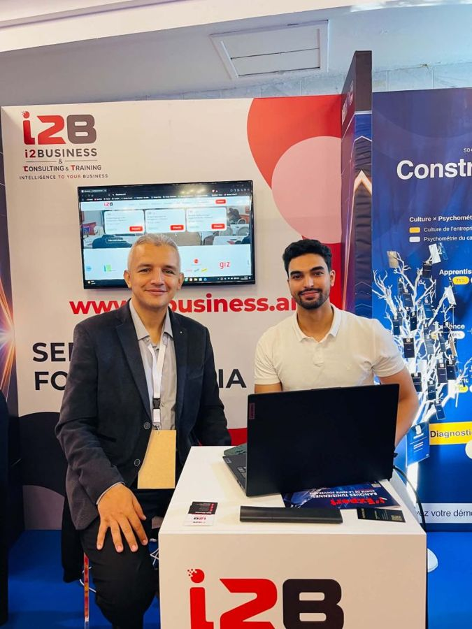

SEO
Technical audit, keyword research, optimized content, internal linking and performance tracking with Search Console.
Let’s talk ↗I help brands strengthen their online presence through organic search, a structured content strategy and the new possibilities of artificial intelligence.

About
I am Ayoub Yatouji, an SEO consultant and digital marketing professional with a professional Master’s degree in Distribution, Negotiation and Digital Commerce.
At E2B Consulting & Training, I developed an approach to SEO that combines technical analysis, an understanding of search intent, editorial strategy and performance tracking.
I also follow how artificial intelligence and GEO (Generative Engine Optimization) are changing online search.
Services
Attract visitors, convert them and save time: three levers I know how to connect.
Technical audit, keyword research, optimized content, internal linking and performance tracking with Search Console.
Let’s talk ↗Creation and optimization of Meta ad campaigns, alongside organic search.
Let’s talk ↗n8n workflows, Python tools and AI agents to automate audits, reports and content production.
Let’s talk ↗Background
École Supérieure de Commerce de Tunis (ESCT)
ESCT – University of La Manouba
E2B Consulting & Training: SEO, content and final-year project
First Master Class
In the field
I represented E2B, now i2business.ai, in front of visitors, students and professionals.
E2B stand at an event organized by the Arab University of Sciences.
Representing E2B at the school’s Job Fair: conversations with students and recruiters.
Hôtel Royal Hammamet. Representing i2business.ai alongside Mr. Mohamed Kais Khenine, around HR, innovation and digital transformation.



Skills
From audit to optimization, every action serves a clear goal: improving visibility and the search experience.
Audits, crawling, indexing, performance, Core Web Vitals and fixing technical issues.
Keyword research, search intent, page optimization and internal linking.
Organic performance tracking, opportunity analysis and data-driven recommendations.
Using AI tools in SEO workflows and thinking about visibility in generative engines.
Google Search Console · Google Analytics 4 · Screaming Frog · Ahrefs · Meta Ads · Meta Business Suite · SEMrush · SurferSEO · Frase · Claude · Perplexity · WordPress
Method
Technical and editorial audit to spot what holds visibility back: crawling, indexing, content, competitors.
Keyword research, search intent and a structure of clusters and pillar pages.
Written and optimized content, internal linking, product sheets and service pages.
n8n workflows and Python tools connected to Search Console to remove repetitive tasks.
Tracking clicks, impressions and positions, then clear reports to decide what comes next.
Projects
SEO and automation projects carried out at E2B Consulting & Training and for client websites.
SEO strategy and automation system built for kenzastihl.com (final-year project): 16 n8n workflows on an OVH VPS with Docker and a Python tool connected to the Search Console API. Results: +30.6% organic clicks, +27.7% impressions in one month, average position from 9.9 to 8.7.
Visit the site ↗Populating and structuring all the content of the new website after its migration.
Visit the site ↗Over 35 pages of B2B content organized in 6 semantic clusters (E-E-A-T method) for the North American market.
Visit the site ↗Updating the website content and adding new pages during my SEO internship. The company has become i2business.ai.
Visit the site ↗Case study
Between October and December 2025, clicks fell from 6,340 to 4,870 and the average position went from 8.4 to 10.4, partly because of seasonality. Audits, content and reports were done by hand.
Daily technical monitoring, rank tracking, content optimized with AI skills and an automatic monthly report: 16 n8n workflows and a Python tool connected to Search Console.
From February to March 2026: +30.6% clicks, +27.7% impressions and an average position from 9.9 to 8.7. Writing a product sheet: −85% time. Monthly report: −95%.
Final-year project
DNCD Master’s, ESCT – University of La Manouba, 2025/2026. Design and deployment of an AI agent for kenzastihl.com, carried out at E2B Consulting & Training.
Technical monitoring, rank tracking via SerpAPI, content generation with the Claude API and automatic reporting.
Specialized skills for recurring SEO tasks: content, audits and analyses.
kenza-seo-tool generates the monthly reports from the Google Search Console API.
Measured results, February → March 2026
Proof
Search Console data, compared between two periods.
February 2026 → March 2026
September 2025 → October 2025
Blog
A space to share analyses, methods and lessons learned about SEO and digital marketing.
Understanding a site’s technical and editorial state before setting optimization priorities.
Read the article (in French) ↗Structuring content around user needs and making it easy to move between pages.
Read the article (in French) ↗Exploring the links between classic SEO, content quality and generative search engines.
Read the article (in French) ↗Quick test
Eight questions, one minute. Answer honestly.
Contact
Open to job opportunities, collaborations and SEO projects.